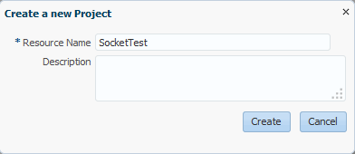
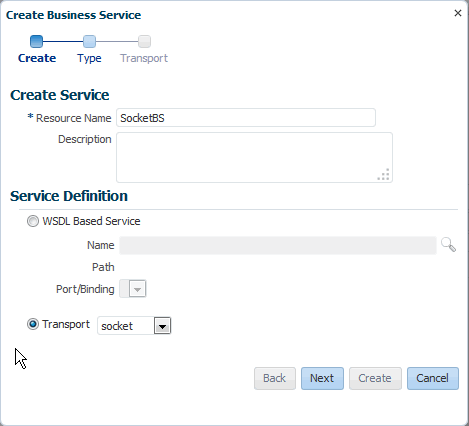
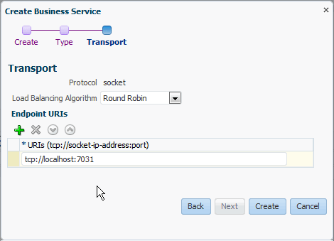
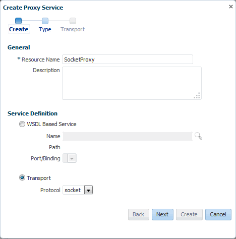
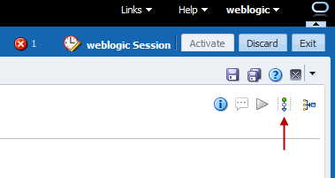
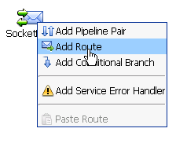
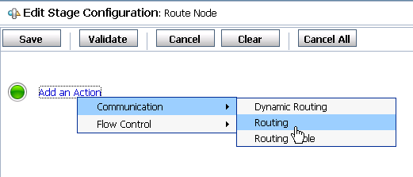
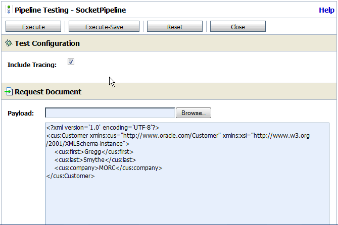
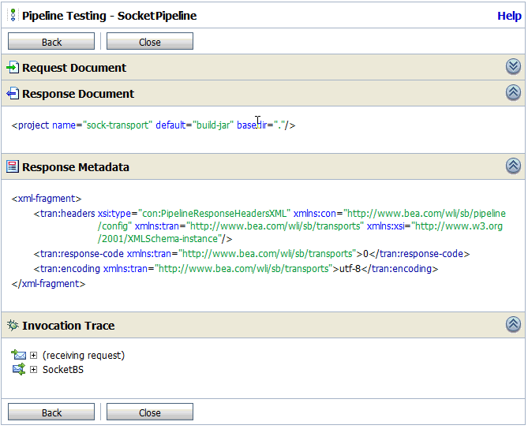

Configuring the Socket Transport Sample
The sample consists of a test server and a test client. The client sends a message to the server. You configure Oracle Service Bus to receive and process the message.
Perform the following tasks to create a sample project for the socket transport:
Create a New Project
The first step to creating the sample is to create the actual project that will contain the Service Bus resources.
Start the Oracle Service Bus Console and either create a new session or edit an existing session.
In the Project Navigator, right-click All Projects, point to Create, and select Project.
On the Create a New Project dialog, enter SocketTest in the Resource Name field, as shown in Figure 6-1.

Click Create.
The new project appears in the project table.
Create a Business Service
In the sample project, you need to create a business service to talk to the server.
In the Project Navigator, right-click the SocketTest project, point to Create, and select Business Service.
The Create Business Service wizard appears.
In the Resource Name field, enter SocketBS.
In the Transport field, select socket, as shown in Figure 6-2.

Click Next.
The Type page of the Create Business Service wizard appears.
For the Service Type, select Any XML Service. Click Next..
The Transport page of the Create Business Service wizard appears.
In the Endpoint URI field, enter tcp://localhost:7031, as shown in Figure 6-3.

Click Create.
The business service appears in the Business Service Definition Editor. You can click the different subtabs to view the configuration.
Click Save.
Create a Proxy Service
In this section, you create a proxy service to accept messages from the client.
In the Project Navigator, right-click the SocketTest project, point to Create, and select Proxy Service.
The Create Proxy Service wizard appears.
In the Resource Name field, enter SocketProxy.
In the Transport field, select socket, as shown in Figure 6-4.

Click Next.
The Type page of the Create Proxy Service wizard appears.
In the Service Type field, select Any XML Service. Click Next.
In the Endpoint URI field, change the default URI to 7032.
Click Create.
The proxy service appears in the Proxy Service Definition Editor. You can click the different subtabs to view the configuration.
Click Save.
Create a Pipeline
Now that the business and proxy services are defined, you can create a pipeline to route incoming messages to the business service.
In the Project Navigator, right-click the SocketTest project, point to Create, and select Pipeline.
The Create Pipeline dialog appears.
In the Pipeline Name field, enter SocketPipeline.
For the Service Type, select Any XML Service.
Deselect Expose as Proxy Service, as shown in Figure 6-5.

Click Create.
The pipeline appears in the Pipeline Definition Editor. You can click the different subtabs to view the configuration.
In the Pipeline Definition Editor toolbar, click the Open Message Flow icon, as shown in Figure 6-6.

The Edit Message Flow window appears.
Click the SocketPipeline icon and select Add Route, as shown in Figure 6-7.

Click the RouteNode1 icon and select Edit Route.
In the Edit Stage Configuration window, click Add an Action and select Communication > Routing, as shown in Figure 6-8.

Next to Route to, select <Service>.
In the Select Service window, select SocketBS and click Submit.
In the Edit Stage Configuration window, click Save.
Optionally, click the RouteNode1 icon and change the name to SocketBS.
Click Save.
Connect the Proxy Service and Pipeline
In this section, you configure the proxy service to send messages to the pipeline you created.
In the Project Navigator, click the SocketProxy proxy service.
The Proxy Service Definition Editor appears.
On the General subtab of the Configuration tab, click Choose a Service Resource by the Target Name field.
On the Search and Select dialog, enter SocketPipeline in the Name field and click Search.
Select the pipeline in the results list, and then click OK.
Click Save.
Click Activate to deploy the new resources to the WebLogic Server.
Testing the Socket Transport Provider
The sample project includes a simple socket server and a client to test the socket transport provider. First you need to start the sample server and client, and then you can work with the Test Console to test the transport provider.
Execute the following command from the sample-transport directory to start the test server:
java -classpath .\test\build\test-client.jar -Dfile-encoding=utf-8 -Drequest-encoding=utf-8
com.bea.alsb.transports.sample.test.TestServer 7031 message-file-location
Where 7031 is the port number in the business service endpoint URI and message-file-location is the path and name of the message file to send as a response to the business service.
In the Project Navigator, click SocketPipeline to open it in the Pipeline Definition Editor.
In the upper portion of the editor, click the Launch Test Console icon.
The Test Console appears in a new browser window.
In the Test Console, enter any valid XML stanza in the text area, or use the Browse button to select a valid XML file on the local system.
For example, in Figure 6-9, a short XML stanza

Click Execute.
If the test is successful, information similar that shown in Figure 6-10 appears in the Test Console. In addition, the XML text input into the Test Console is echoed in the server console.

- Close the Test Console.